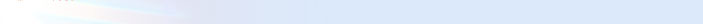

<html>
<head>
<title>arteffect</title>
<meta http-equiv="content-type" content="text/html; charset=iso-8859-1">
<!-- imageready preload script (arteffect.psd) -->
<script language="javascript">
<!--

function newimage(arg) {
	if (document.images) {
		rslt = new image();
		rslt.src = arg;
		return rslt;
	}
}

function changeimages() {
	if (document.images && (preloadflag == true)) {
		for (var i=0; i<changeimages.arguments.length; i+=2) {
			document[changeimages.arguments[i]].src = changeimages.arguments[i+1];
		}
	}
}

var preloadflag = false;
function preloadimages() {
	if (document.images) {
		index_05_home_over = newimage("images/index_05-home_over.jpg");
		border2_releases_over = newimage("images/border2-releases_over.jpg");
		border2_members_over = newimage("images/border2-members_over.jpg");
		index_09_members_over = newimage("images/index_09-members_over.jpg");
		home_about_over = newimage("images/home-about_over.jpg");
		home_over = newimage("images/home-over.jpg");
		about_members_over = newimage("images/about-members_over.jpg");
		about_over = newimage("images/about-over.jpg");
		about_home_over = newimage("images/about-home_over.jpg");
		members_releases_over = newimage("images/members-releases_over.jpg");
		members_over = newimage("images/members-over.jpg");
		members_about_over = newimage("images/members-about_over.jpg");
		releases_links_over = newimage("images/releases-links_over.jpg");
		releases_over = newimage("images/releases-over.jpg");
		releases_members_over = newimage("images/releases-members_over.jpg");
		links_archive_over = newimage("images/links-archive_over.jpg");
		links_over = newimage("images/links-over.jpg");
		links_releases_over = newimage("images/links-releases_over.jpg");
		archive_over = newimage("images/archive-over.jpg");
		archive_links_over = newimage("images/archive-links_over.jpg");
		logo2_archive_over = newimage("images/logo2-archive_over.jpg");
		preloadflag = true;
	}
}

// -->
</script>
<!-- end preload script -->
</head>
<body bgcolor=#dce9fa onload="preloadimages();" leftmargin="0" topmargin="0">
<!-- imageready slices (arteffect.psd) -->
<div id="layer1" style="position:absolute; left:181px; top:157px; width:522px; height:463px; z-index:1">
  <h1><font color="#800040">Past news</font></h1>
  <br>
  <br>
  <font color="#800040">28 May 98</font><br>
  Bu gece cok ozel bir geceydi. Sherlock Holmes'u saygiyla ve icimizdeki sicak 
  sevgiyle kutsayarak severek andik. Nedenini de burada soylebilmeyi kalperimiz 
  ne kadar isterdi. Belki aylar sonra. Belki de yarindan da yakin.. 27'yi 28'i 
  baglayan gece SSG ile HEretic meyhaneye gittiler kavga cikti... SSG dayak yedi. 
  Heretic ise korkak bir pilic gibi kacti... Kendisini esefle kiniyoruz... Sonradan 
  geldi ama nereye kadar? Ben burnum kirildiktan sonra kurtarilsam ne olur? yoksa 
  kurtarilmasam mi ? aslinda du$unmek lazim... Her$eyin en iyisini hep diledik... 
  Bi orta pizza, tavada tavuk yerine iki kofte, bi de bizim ayran vardi daha gelmedi 
  ne i$? Gelirizi orayarz... <br>
  <br>
  <font color="#800040">27 May 98</font><br>
  <font color="#ff0000"> Windows NT KUR!... BO$VER 98'i..... kur NT'yi... </font> 
  <br>
  <br>
  <font color="#800040">27 May 98</font><br>
  Vee en merakla beklediginiz ultra-fiction story "I$ Goru$mesi Part III" (final 
  part kacirmayin), sayfalarimizin nadide archive bolumunde bulabilenz... <br>
  <br>
  <font color="#800040">17 May 98</font><br>
  Cori's Art Gallery'yi sayfamizin nacizane archive sayfalarina ekledik... Henuz 
  fazla bi$ii yok ama zamanla eklenecek... Sabredin.. <br>
  <br>
  <font color="#800040">16 May 98</font><br>
  Heretic'in son oykusu "Saliha'nin Ku$lari"ni kacirmayin!!! Archive sayfalarimizda 
  bulabilite... SSG uzun bir dogu seyahatinden dolayi sayfayi update edemedi bir 
  sure onu da affedin... Hayat sizinle olsun... <br>
  <br>
  <font color="#800040">29 Apr 98</font><br>
  Ve ozenle beklediginiz "i$ goru$mesi part ][" sayfalarimizda. Hikaye gittikce 
  erotikle$irken gururla kabaran yureklerimizin ate$ini dindirecek bir nebze hissiyattir 
  kanimizda akan... (Bahadir Boysal gibi zirvaladim) <br>
  <br>
  <font color="#800040">26 Apr 98</font><br>
  "I$ goru$mesi" serisinin ikincisi yakinda bu sayfalarda. bLaCkWinD, Agg 0.8 
  yaziyomu$ gibi hali war. FatalicA, Cori, Qube'un $u aralar deathmatch olayi 
  yapiyor olmalari lazim. <br>
  <br>
  <font color="#800040">19 Apr 98</font><br>
  SSG, i$ gucten sayfayi maintain etmeye vakit bulamiyor dogru durust. affedin. 
  <br>
  <br>
  <font color="#800040">07 Apr 98</font><br>
  Archive section'da yeni yeni $eyler bulabilirsiniz. $airler'e ekleme yaptik. 
  Mektuplar'i ekledik. <br>
  <br>
  <font color="#800040">06 Apr 98</font><br>
  Tum Turk Halkinin (sadece Turk Halkinin) buradan, butun bayramlarin sevgi ve 
  saygi dahilinde, mutluluk bari$ karde$ mutlak zafer, icerik dolu yarinlara hep 
  birlikte elele ba$arilar.<br>
  <br>
  <p align="right">aRtEffECt Halk ve Ili$kiler Burosu Ust Yonetim Kat:2 No:6<br>
    Bi orta pizza, 2 tava, tavalardan birinde tavuk yerine iki kofte. Ayran var 
    mi?</p>
  <font color="#800040">01 Apr 98</font><br>
  Aggressor Exploit Generator'un latest version'ini "releases" tan aliniz. <br>
  <br>
  <font color="#800040">28 Mar 98</font><br>
  bLaCkWinD, aRtEffECt'e katildi. bLaCkWinD'in yazdigi Aggressor Exploit Generator'un 
  0.666 beta'sini $uradan download edebilirsiniz. Cori, yeni bir homepage tasarimi 
  uzerinde cali$iyor. <br>
  <br>
  <font color="#800040">28 Mar 98</font><br>
  FatalVision'i source'lariylan birlikte public domain release ettik. Daha fazla 
  soze gerek yok. <br>
  <br>
  <font color="#800040">25 Mar 98</font><br>
  Plecxus, aRtEffECt'e katildi. <br>
  <br>
  <font color="#800040">24 Mar 98</font><br>
  Cori cafe'deki i$ten ayrildi... Artik daha mutlu bir insan :) Archive bolumune 
  SSG'nin yazdigi kisa bir hikaye "i$ goru$mesi" eklendi... (daha bitmedi ya).. 
  Qube, Cori ve BLoodY/ASS Total Annihilation olayini bitirdiler... <br>
  <br>
  <font color="#800040">20 Mar 98</font><br>
  Buraya kadar her$ey yolunda.. <br>
  <br>
  <font color="#800040">16 Mar 98</font><br>
  Buraya kadar her$ey yolunda.. <br>
  <br>
  <font color="#800040">26 Feb 98</font><br>
  SSG, sabah 8'den ak$am 6'ya kadar i$te... Cori, sabah 9'dan ak$am 6'ya kadar 
  i$te... Qube, sabah 8'den ak$am 9'a kadar i$te... FatalicA sabah 11'den ak$am 
  6'ya kadar i$te... Heretic i$te degil... <br>
  <br>
  <font color="#800040">22 Feb 98</font><br>
  Heaven's Lord, gruptan ayrildi... Artik be$ ki$iyiz... SSG i$e girdi. O yuzden 
  bu sayfaya daha az vakit ayirmak durumunda... Cori kendine bir adet Elsa Synergy 
  aldi... Qube kendine 32x Philips aldi... FatalicA distortion'i bitirmek icin 
  elinden geleni yapiyor... (yapmiyorsa bu iyi degil tabi)... Heretic bir oyun 
  projesi fikri atti ortaya... <br>
  <br>
  <font color="#800040">17 Feb 98</font><br>
  Sayfanin maintainer'i olan SSG, yogun cali$ma temposu dolayisiyle sayfayla fazla 
  ilgilenememek durumunda kalmi$tir. Bundan dolayi tum Kanal D izleyicilerinden 
  ozur diliyoruz. <br>
  <br>
  <font color="#800040">11 Feb 98</font><br>
  Neden bilmiyoruz, guzel server'imiz "anadolu", bizim musicdisk'i gondermemekte 
  direniyor. Bundan dolayidir ki musicdisk'in URL'sini Hornet'e redirect ettik, 
  bizi affedin. <br>
  <br>
  <font color="#800040">09 Feb 98</font><br>
  Geri gelding! Musicdisk'in yarim gitmesi tamamiyle kontrolumuz di$inda oldu. 
  Bu sorun icin Ebru i$ merkezi yoneticilerini, Superonline'i, Ada'nin leased 
  hatlarini, Sedef Turizm'i vs vs suclayabilirsiniz ama bizi asla!!! Scene party 
  cok guzeldi! aRtEffECt olarak page'e bir scene party report koymayi du$unuyoruz! 
  Sabirsizlikla bekleyiniz!! <br>
  <br>
  <font color="#800040">06 Feb 98</font><br>
  Musicdisk release oldu!!!! releases bolumune bakiniz!!!!!!! <br>
  <br>
  <font color="#800040">06 Feb 98</font><br>
  Izmir!! Bizi bekle geliyoruz! Bu gece yola cikiyoruz... Musicdisk'i yola cikmadan 
  once release etmeye cali$acagiz... Her ihtimale kar$i siz bir releases kismini 
  check edin... SSG, x-dream'in yeni version'ini release etti... <br>
  <br>
  <font color="#800040">03 Feb 98</font><br>
  Musicdisk'i per$embe'ye release ediyoruz... Amiga release'ini de ayni anda yapmaya 
  cali$acagiz... Guc bizimle olsun... <br>
  <br>
  <font color="#800040">29 Jan 98</font><br>
  Cori ve Heretic, tatil dolayisiyla $ehir di$indalar... FatalicA ve Heaven's 
  Lord buharla$ip havaya uctular... Qube saolsun hep burada... SSG zaten benim... 
  :)) Neyse olay $u ki, 7-8'indeki "the greatest party of all"a cok az zaman kaldi... 
  musicdisk'i o event'ten once release edecez... sabirsizlanin. <br>
  <br>
  <font color="#800040">21 Jan 98</font><br>
  Hic mi hic sormayin "neredeydiniz" diye... Ben soylicem... Benim board'un sorunlari 
  wardi geri yolladik... sonra board tayland'a falan gitti... Neyse... Olay $u 
  ki... Musicdisk'in Amiga kodu %90, PC kodu %120 bitti... 7-8 $ubat scene gathering 
  icin kendimizi yava$ yava$ heyecanli hissetmeye ba$ladik... Allah sonumuzu hayir 
  etsin... <br>
  <br>
  <font color="#800040">10 Jan 98</font><br>
  Evet artik #coders millettinin web sayfalarini bir araya toplayan bir ring'imiz 
  war: <a href="ring.html">the #coders connection</a>!! neyse... Eger #coders'tansaniz 
  bu ring'e sokun sayfanizi sayfanizi mutlu edin... News formatimiz degi$ti... 
  (hizli yuklenme babina) <br>
  <br>
  <font color="#800040">9 Jan 98</font><br>
  Heretic's Art Gallery, ve ustune ustluk SSG's Art Gallery ar$iv bolumumuze eklendi... 
  Inceleyiniz... Musicdisk'in Amiga kodu %70 bitti... PC kodu %105 bitti... bu 
  Pazar'a release edelim diyoruz bakalim hadi hayirlisi... Guestbook'umuzu imzalayin 
  ulan! Onceden imzalayanlar da imzalasin malum degi$ti kendisi... <br>
  <br>
  <font color="#800040">6 Jan 98</font><br>
  Guestbook'ta cikan ve sayfayi ziyaret edenleri deli eden sorunlari halletmek 
  uzere local CGI kullanimindan vazgecip yine elin gavurunun guestbook hizmetlerini 
  kullanmak zorunda kaldik... Bundan dolayi eski guestbook kayitlari silindi. 
  Tekrar imzalamak icin cekinmeyin! <br>
  <br>
  <font color="#800040">1 Jan 98</font><br>
  Yeni bir yil, yepyeni mutluluklar sevgili izleyenler. Hepinizi buradan kucak 
  dolusu kucakliyorum ve yeni yilda hepinize saglik, bari$, mutluluk, sevgi, iyiniyet, 
  ho$kalplilik, surrealizm, yerdenbiticilik, otenazi dolu, yillanmami$, tutarli, 
  siradi$i, bol$evik, kesintisiz, karikiz dolu, yeterince iyi bir yil diliyorum. 
  Her$ey gonlunuzce olsun. <br>
  <br>
  <font color="#800040">30 Dec 97</font><br>
  Musicdisk her ne kadar release'e hazir olmasina ragmen TAMI TAMINA Amiga ve 
  PC platformlarinda bitmeden release etmeme karari aldik dolayisiyla yilba$indan 
  sonra bitirecez gibi gorunuyor. Cori ve Heretic yilba$ini kutlamaya birlikte 
  Hawaii'ye gittiler. <br>
  <br>
  <font color="#800040">23 Dec 97</font><br>
  "Best of #coders" ar$iv bolumumuze eklendi! Sabirsizlikla inceleyin! Musicdisk'in 
  grafikleri bitti... $imdi SSG, "real_vumeter" ve kodun double buffering kisimlarini 
  bitirmek icin tirmaliyor... <br>
  <br>
  <font color="#800040">21 Dec 97</font><br>
  Bugun SSG'nin dogumgunu... Haberiniz olsun! Heretic'in $airler Antolojisine 
  iki yeni $air daha eklendi. Kutuphaneden toplayip toplayip kitaplari buralara 
  giriyoruz sirf sizin iyiliginiz icin. Page'i update edemedik daha ama cok yakinda 
  Abluka isimli 3 perdelik piyes ve "best of #coders" isimli feature'lari da sayfaya 
  ekleyecegiz! Musicdisk'in cikmasina sayili gunler kaldi! yilba$indan once cikacak 
  gibi bir his var icimizde! <br>
  <br>
  <font color="#800040">18 Dec 97</font><br>
  TDSN #2 cikti!! Bulamayanlar <a href="tdsn2.zip">bizim homepage'den </a> de 
  cekebilirler. SSG ve Qube musicdisk kodunun %90'ini bitirdiler. $imdi i$ grafikerlere 
  kaldi. :) bekleyiniz. <br>
  <br>
  <font color="#800040">15 Dec 97</font><br>
  Cori'nin gazi uzerine SSG'nin XiRCON icin kodladigi script release edildi. &lt;x-dream&gt; 
  ismindeki bu nadide scripti "releases" bolumunde veya <a href="http://www.xircon.com/archive.htm" target="_blank">official 
  XiRCON homepage'de</a> bulabilirsiniz. Ayrica SSG musicdisk'i sonunda cali$ir 
  hale getirmeyi ba$ardi. Interface grafikleri hazirlanir hazirlanmaz ayni anda 
  Amiga ve PC'de release etmeyi planliyoruz. Yapilan benchmark sonuclarinda FatalicA'nin 
  K6 210'unun FPU speed'inin SSG'nin 166MMX'iyle AYNI oldugu ortaya cikti... Eski 
  news'leri ucurmaya karar verdim... <br>
  <br>
  <font color="#800040">14 Dec 97</font><br>
  SSG musicdisk kodunu bitirmek uzere. Sona cok yakin. Sabredin. Archive bolumune 
  Heretic'in bir kac kreasyonunu yerle$tirdik... Boyleyken boyle... <br>
  <br>
  <font color="#800040">9 Dec 97</font><br>
  SSG'nin guzelim distortion'i $u anda Eski$ehir Belediye coplugunde... FatalicA 
  oyun oynuyo. Qube musicdisk'in Amiga port'unu kodluyo... Heaven yeni bir homepage 
  tasarimi du$unuo. Hadi hayirlisi. Heretic yeni moduller yapti musicdisk'e ekleyecez 
  buyuk ihtimalle sevinin... Cori sinavlara giriyo... <br>
  <br>
  <font color="#800040">1 Dec 97</font><br>
  Yeeahh.. Artik news'leri Turkce yazmaya karar verdik... Hadi bakalim... Hex 
  bizleydi... Geleneksel ganayem torenleri cok duzeyli gecti... SSG aletini upgrade 
  etti... 166MMX oldu... FatalicA grup icinde huzursuzluk cikardi... SSG'den daha 
  iyi coder oldugunu iddia etti... Sag elinin serce parmaginin kesilmesine karar 
  verildi... Musicdisk hala kodlaniyor... Arabirim bitti $imdi modplaying engine'i 
  sors'a entegre etmek icin tirmaliyoruz... <br>
  <br>
  <font color="#800040">27 Nov 97</font><br>
  Our guestbook has almost been finished... You can <a href="http://www.anadolu.edu.tr/”gnl77/cntr/gbook.html">view 
  it here!</a>.. Also please tell us your comments about homepage or anything 
  else on our <a href="http://www.anadolu.edu.tr/”mkapanog/gbook.html">sign page!</a> 
  <br>
  <br>
  <font color="#800040">20 Nov 97</font><br>
  All aRtEffECt members got together again! We had a visitor from Izmir: MS!/Bronx... 
  He asked us for membership and we refused him of course! :)) Anyway we had great 
  time... Here are the traditional quotes from that night:<br>
  <br>
  Cori: "Olm cok guzel oldu yaa... hayvan gibi oldu"<br>
  Heretic: "Senin buyu yapman icin ellerini kaldirman mi gerekiyor? Ne ilkel!"<br>
  SSG: "Hmmmm..." (FatalicA'nin soyledigi her kisaltmadan sonra) Qube: "Hadi len"<br>
  Heaven's Lord: "Sorsana bi bakalim Amerika'da animasyon grafikle ilgil okul 
  ismi biliyolar miymi$?"<br>
  MS!: "Bak Mr. Bean'de $oyle bi sahne war. Adam $imdi gidiyo.."<br>
  FatalicA: "Tamam lan soruyorum..." <br>
  <br>
  <font color="#800040">16 Nov 97</font><br>
  Musicdisk is real soon!!! <br>
  <br>
  <font color="#800040">10 Nov 97</font><br>
  At last, Qube has finished our marvellous guestbook!!! Thoug we haven't integrated 
  it to our page completely yet, you can still sign it <a href="gbook.html">here!</a>... 
  FatalicA is still workin on a 4k TDSN reader! (I insist that it will surely 
  exceed the 4k limit heheh)... SSG began to re-code the musicdisk on C... :PP 
  <br>
  <br>
  <font color="#800040">31 Oct 97</font><br>
  Aha!! Finished all the member gfx... Cori and SSG is going to go to Istanbul 
  tonight... Heretic still works on an aRtEffECt sign... FatalicA seems to be 
  working on nothing... It's told that Heaven's Lord has created a good logo! 
  <br>
  <br>
  <font color="#800040">28 Oct 97</font><br>
  We all are busy as hell... Cori is workin on some XM's.. SSG is tryin to code 
  the musicdisk... Heaven's Lord is workin on an aRtEffECt logo.. FatalicA is 
  tryin to code a 4k tdsn reader... Qube is workin on the guestbook... Heretic's 
  workin on some gfx for homepage... <br>
  <br>
  <font color="#800040">26 Oct 97</font><br>
  All aRtEffECt members were together! We got two new members: Heaven's Lord and 
  FatalicA... We are getting bigger, and more dangerous... Beware us... Now here 
  are the quotes from the members about tonight's gathering:<br>
  <br>
  SSG: "Agbi $alvar di$inda her$ey guzel gecti. Ba$Arili bir gece oldu tahmin 
  ediyorum. herkese mutluluklar dilerim... Sprite war mi?"<br>
  Cori: "Abi bu ASUS'u kesin alacam... TV out'u da varmi$... (tabi gece hakkinda 
  ne du$undugunu asla ogrenemiyoruz --ed)<br>
  Heaven's Lord: "Yok yok logo type ile amblem siluet olarak tasarlanmali bu konuda 
  israr ediyorum..." <br>
  Heretic: "Hmmmfff"<br>
  Qube: "Freeman agbi... Olayi bitirmi$ler..."<br>
  FatalicA: "Way anasini demek cut ediyo ha? way way.."  </div>
<table width=800 border=0 cellpadding=0 cellspacing=0>
	<tr>
		<td>
			</td>
		<td>
			</td>
		<td>
			</td>
		<td>
			</td>
		<td>
			</td>
		<td>
			</td>
		<td></td>
	</tr>
	<tr>
		<td colspan=5 bgcolor=#dce9fa>
			</td>
		
    <td rowspan=12 bgcolor=#dce9fa>&nbsp; </td>
		<td>
			</td>
	</tr>
	<tr>
		<td colspan=4 bgcolor=#dce9fa>
			</td>
		<td bgcolor=#dce9fa>
			</td>
		<td>
			</td>
	</tr>
	<tr>
		<td colspan=2 rowspan=2 bgcolor=#dce9fa>
			</td>
		<td rowspan=9 bgcolor=#dce9fa>
			</td>
		<td colspan=2 bgcolor=#dce9fa>
			</td>
		<td>
			</td>
	</tr>
	<tr>
		
    <td colspan=2 rowspan=9>&nbsp; </td>
		<td>
			</td>
	</tr>
	<tr>
		<td rowspan=7 bgcolor=#dce9fa>
			</td>
		
    <td bgcolor=#dce9fa> <a href="index.html"
				onmouseover="changeimages('index_05', 'images/index_05-home_over.jpg', 'home', 'images/home-over.jpg', 'about', 'images/about-home_over.jpg'); return true;"
				onmouseout="changeimages('index_05', 'images/index_05.jpg', 'home', 'images/home.jpg', 'about', 'images/about.jpg'); return true;"> 
      </a></td>
		<td>
			</td>
	</tr>
	<tr>
		
    <td bgcolor=#dce9fa> <a href="about.html"
				onmouseover="changeimages('home', 'images/home-about_over.jpg', 'about', 'images/about-over.jpg', 'members', 'images/members-about_over.jpg'); return true;"
				onmouseout="changeimages('home', 'images/home.jpg', 'about', 'images/about.jpg', 'members', 'images/members.jpg'); return true;"> 
      </a></td>
		<td>
			</td>
	</tr>
	<tr>
		
    <td bgcolor=#dce9fa> <a href="membaz.html"
				onmouseover="changeimages('border2', 'images/border2-members_over.jpg', 'index_09', 'images/index_09-members_over.jpg', 'about', 'images/about-members_over.jpg', 'members', 'images/members-over.jpg', 'releases', 'images/releases-members_over.jpg'); return true;"
				onmouseout="changeimages('border2', 'images/border2.jpg', 'index_09', 'images/index_09.jpg', 'about', 'images/about.jpg', 'members', 'images/members.jpg', 'releases', 'images/releases.jpg'); return true;"> 
      </a></td>
		<td>
			</td>
	</tr>
	<tr>
		
    <td bgcolor=#dce9fa> <a href="rels.html"
				onmouseover="changeimages('border2', 'images/border2-releases_over.jpg', 'members', 'images/members-releases_over.jpg', 'releases', 'images/releases-over.jpg', 'links', 'images/links-releases_over.jpg'); return true;"
				onmouseout="changeimages('border2', 'images/border2.jpg', 'members', 'images/members.jpg', 'releases', 'images/releases.jpg', 'links', 'images/links.jpg'); return true;"> 
      </a></td>
		<td>
			</td>
	</tr>
	<tr>
		
    <td bgcolor=#dce9fa> <a href="links.html"
				onmouseover="changeimages('releases', 'images/releases-links_over.jpg', 'links', 'images/links-over.jpg', 'archive', 'images/archive-links_over.jpg'); return true;"
				onmouseout="changeimages('releases', 'images/releases.jpg', 'links', 'images/links.jpg', 'archive', 'images/archive.jpg'); return true;"> 
      </a></td>
		<td>
			</td>
	</tr>
	<tr>
		
    <td bgcolor=#dce9fa> <a href="archive.html"
				onmouseover="changeimages('links', 'images/links-archive_over.jpg', 'archive', 'images/archive-over.jpg', 'logo2', 'images/logo2-archive_over.jpg'); return true;"
				onmouseout="changeimages('links', 'images/links.jpg', 'archive', 'images/archive.jpg', 'logo2', 'images/logo2.jpg'); return true;"> 
      </a></td>
		<td>
			</td>
	</tr>
	<tr>
		<td bgcolor=#dce9fa>
			</td>
		<td>
			</td>
	</tr>
	<tr>
		<td colspan=3 bgcolor=#dce9fa>
			</td>
		<td>
			</td>
	</tr>
</table>
<!-- end imageready slices -->
</body>
</html>